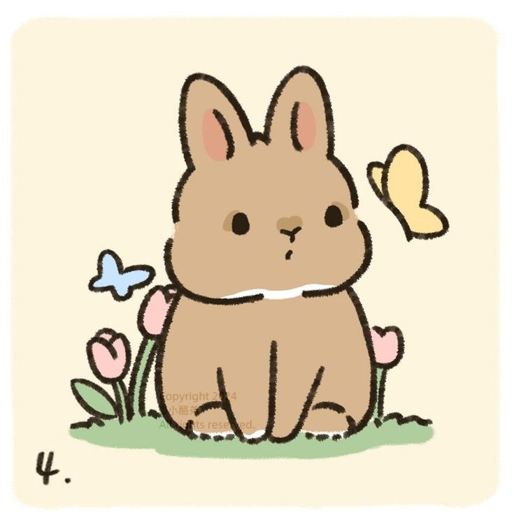

ADOPT A FURRY FRIEND
Feeling a little lonely? Looking for a fluffy companion to brighten your days?
You’re in the pawfect place! 🐾
At Adopt a Furry Friend, we believe every pet deserves a loving home — and every person deserves a loyal companion.
Whether you’re looking for a playful pup, a cuddly kitten, or a calm and gentle buddy, we have the right match just
waiting for you. Take a peek at our adorable pets and get ready to meet your new best friend.
Because love is just a paw away.